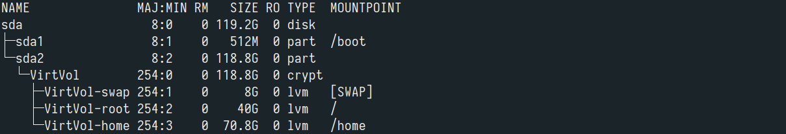

After deciding to say sayōnara to my previous dual booted system (Windows and Arch) and go 100% Arch, I came to the realization that this would be a great time to be proactive in securing my data and do some full disk encryption. This will be a brief guide on installing Arch Linux on a new system using LUKS for full-disk encryption and LVM for volume management. My motivations for writing this guide are not entirely altruistic - this is documentation for future me as much as it is a guide for anyone who stumbles upon this article.
The Setup
You'll need a bootable flash drive loaded with a current version of of the ISO image. If you’re on Windows it’s also a good idea to disable Secure Boot with UEFI enabled. I will also assume that you are using a SATA based hard drive, in the case that your drive is NVMe based keep in mind that the partition naming scheme will differ i.e. /dev/nmve0 vs /dev/sda.
Partitioning
First we are going to zero out the disk, this is done to ensure that the disk is properly wiped and prepared for encryption. We zero-fill the disk by writing a zero byte to every addressable location on the disk using the /dev/zero stream.
$ cryptsetup open --type plain /dev/sdXY container --key-file /dev/random $ dd if=/dev/zero of=/dev/mapper/container status=progressWe're going to use the GPT partition scheme since we’re on a UEFI system.
$ gdisk /dev/sdaThen we'll set up the ESP and root partitions. There are a number of partitioning tools that you can use, here I will use fdisk. The ESP partition should have a size of 512M and use the partition table type of EFI System (EFI System in fdisk or EF00 in gdisk) . We can fill the rest of the space with the root partition.
$ fdisk /dev/sda $ mkfs.fat -F32 -nESP /dev/sda1 $ mkfs.ext4 /dev/sda2
LUKS disk encryption
I use LUKS or Linux Unified Key Setup to encrypt my drive for two main reasons, further partitioning is super easy with LVM and it allows for single key authentication to unlock all volumes. The only caveat to this setup in the vulnerability of the bootloader. Though there are steps you can take to secure your boot I will not be covering them here.
$ cryptsetup luksFormat /dev/sda2 $ cryptsetup open --type luks /dev/sda2 lvm
LVM filesystem management
Logical Volume Management uses the kernel's device-mapper feature to create "virtual partitions" that make expanding or shrinking partitions ridiculously easy. LVM also supports snapshots which are an efficient way perform backups. I prefer to keep my partition scheme relatively simple with just root, home, and swap partitions. You can call your physical volume whatever you like, here I call it VirtVol.
$ pvcreate /dev/mapper/lvm $ vgcreate VirtVol /dev/mapper/lvm $ lvcreate -L 40G VirtVol -n root $ lvcreate -L 8G VirtVol -n swap $ lvcreate -l 100%FREE VirtVol -n home $ mkfs.ext4 /dev/mapper/VirtVol-root $ mkfs.ext4 /dev/mapper/VirtVol-home $ mkswap /dev/mapper $ mount /dev/mapper/VirtVol-root /mnt $ mkdir /mnt/home $ mount /dev/mapper/VirtVol-home /mnt/home $ swapon /dev/mapper/VirtVol-swap
Arch Install
With the parations all setup now we can install the base system. First we’re going to mount the boot partition and then install the base packages.
$ mkdir /mnt/boot $ mount /dev/sda1 /mnt/boot $ pacstrap /mnt base base-develNow we generate our filesystem information, and chroot into our new installation.
$ genfstab -U /mnt >> /mnt/etc/fstab $ arch-chroot /mnt /bin/bashNext we're going to want uncomment
en_US.UTF-8 to set up UTF-8 character encoding. We also want to generate and create the locale.
$ vim /etc/locale.gen $ locale-gen $ cat >>/etc/locale.conf > LANG=en_US.UTF-8Next set up your timezone and sync the hardware clock
$ ln -s /usr/share/zoneinfo/America/Los_Angeles /etc/localtime $ hwclock --systohc --utcFinally we need to configure and generate a new initial ramdisk environment. Remember to take special care to set
encrypt and lvm to be in front of filesystem in HOOKS=”..”.
$ vim /etc/mkinitcpio.conf $ mkinitcpio -p linuxHere's a look at what my partition scheme looks like.

systemd-boot
The last thing we need to do is set up our boot manager. I use systemd-boot which works on UEFI systems and is easy to set up. We first need to make sure that the ESP partition is mounted at /boot. Then install systemd-boot.
$ mount -l | grep boot $ bootctl installNext we need the UUID of our root partition.
$ blkid -s UUID -o value /dev/sda2Finally we need to write a boot entry. If you have an intel processor it's a good idea to include initrd /intel-ucode.img in your boot entry, this enables microcode updates for the stability and security of the processor. You will need to install the intel-ucode package through pacman before this will work however.
$ cat >>arch-encrypted-lvm.conf title Encrypted Arch Linux linux /vmlinuz-linux initrd /intel-ucode.img initrd /initramfs-linux.img options cryptdevice=UUID=(UUID goes here):VirtVol root=/dev/mapper/VirtVol-root quiet rwAlright that's it! Now you can
exit, reboot, and if you did everything right be greeted with a login shell.
In my next post I'll probably do a writeup about setting up Arch in a usable configuration.